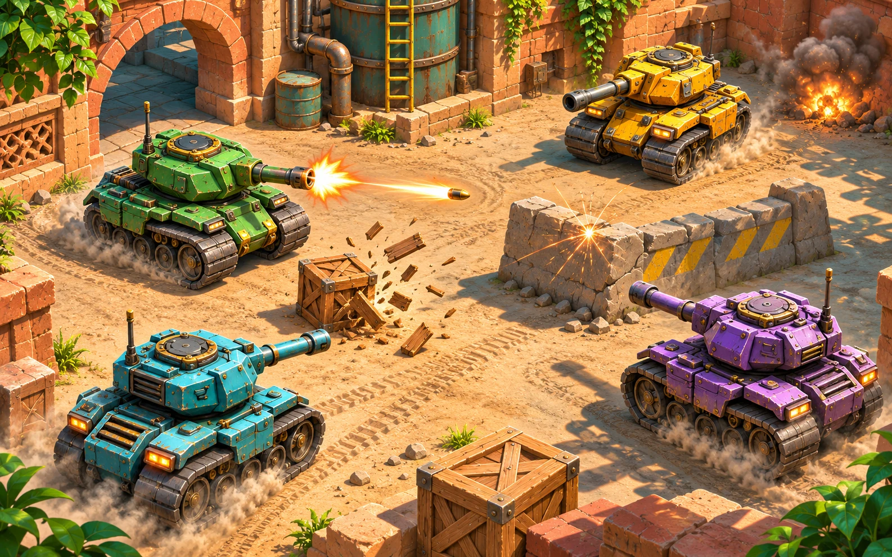

ساحة واحدة. أربع دبابات.
معركة الدبابات
طلقة محسوبة. ضربة تحسم.

2–4 لاعبين · أونلاين1 ضد 1 · نبحث عن لاعب حقيقي
جهّز خطتك
أنت ضد الكمبيوتر. جرّب الارتداد والتصويب والأسلحة قبل مواجهة أصحابك.
جارٍ تجهيز الساحة…
كل طلقة لها حساب ＋
على الجوال: المس أي مكان في يسار الشريط وتطلع لك عصا الحركة تحت إصبعك. يمين الشريط للتصويب: اسحب وتطلق وأنت ساحب، ولمسة سريعة تصوّب على أقرب دبابة وتطلق. التصويب يلتقط الدبابة القريبة من خطك، وتقدر تلمس الساحة نفسها لتطلق على المكان.
على الكمبيوتر: WASD أو الأسهم للحركة، الفأرة للتصويب، والضغط أو المسافة للإطلاق. Esc للقائمة.
القذيفة ترتد عن الحجر مرة واحدة ويمكن أن تصيبك عند رجوعها. اكسر الصناديق وفجّر البراميل. اجمع الدرع أو الرشّاش أو الطلقات الثلاثية أو الصاروخ الموجّه اللي يلحق أقرب دبابة. لكل دبابة 170 صحة، والثواني الأولى من كل جولة محمية.
آخر دبابة أو فريق يبقى يفوز بالجولة. أول 3 انتصارات تحسم المباراة. تبدأ الساحة تضيق بعد نحو دقيقة.
شارك الرمز. جهّز فريقك.
الكل جاهز؟
كل لاعب يدخل من جهازه. في الغرفة الخاصة يبدأ المضيف بعد استعداد الجميع.